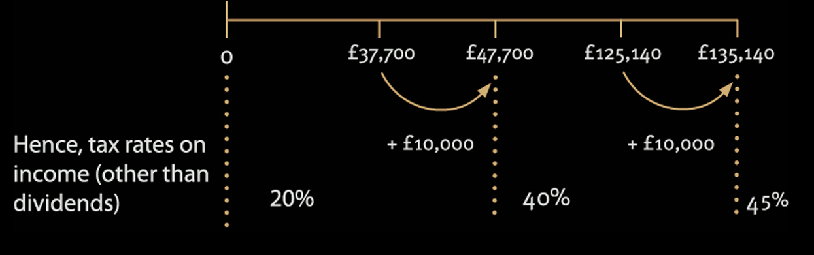

Chapter 6: Pensions
explain and compute the relief given for contributions to personal pension schemes, and to occupational pension schemes.
Types of registered pension schemes (Occupational and Personal)
An individual can set up an investment of funds to provide an income during retirement in a tax efficient way by making payments into a registered pension scheme.
A pension scheme is a savings plan for retirement that enjoys special tax privileges, but only if the scheme is registered with HM Revenue & Customs (HMRC).
The conditions that a pension scheme must satisfy to be registered with HMRC are excluded from the TX examination. Therefore, the exam will not refer to the scheme being a “registered” pension scheme as such, and you can assume that a pension scheme in the exam will be “registered”.
Investing in a pension scheme is a long term investment and is very tax efficient for the following reasons:
- The individual obtains tax relief on the contributions made into the scheme.
- Where an employer contributes into the scheme, tax relief for the employer contributions is available without there being a taxable benefit for the employee.
- Pension scheme funds grow tax-free as the scheme is exempt from income tax and capital gains tax.
- Some funds can be withdrawn as a tax-free lump sum on retirement. This amount is not examinable.
The two main types of pension scheme available are:
- Occupational pension schemes
- Personal pension schemes.
A self-employed or unemployed individual can only set up a personal pension scheme.
An employed individual may:
- Join an occupational pension scheme provided by the employer (the employee may be automatically enrolled depending on the size of the employer), or
- Choose not to join the employer’s scheme and set up a personal pension scheme, or
- Contribute into both the employer’s occupational scheme and set up a personal pension scheme.
Automatic enrolment in an employer-sponsored pension scheme
There is a legal duty for employers to provide a pension scheme to the majority of employees under automatic enrolment. The scheme provided can be an occupational or a personal pension scheme.
Occupational pension schemes
An occupational pension scheme is a scheme set up by a specific employer for the benefit of its employees.
The employer may use an insurance company to provide and run a pension scheme for employees, or it may set up its own self-administered pension fund.
Contributions into an occupational scheme may be made by both the employer and the employee.
Types of occupational pension schemes
Defined benefit scheme
The benefits obtained when taking the pension are linked to the level of earnings of the employee during employment.
Money purchase scheme
(or ‘defined contribution’ scheme)
The benefits obtained when taking the pension depend upon the performance of the investments held by the pension fund.
Personal pension schemes
Personal pension schemes can be established by any individual:
- the employed
- the self-employed
- those not working (including children).
And may be made by:
- the individual, and
- any third party on behalf of the individual (for example the employer, a spouse or civil partner, parent or grandparent).
Personal pension schemes are usually money purchase schemes administered by financial institutions on behalf of the individual.
Tax relief is available for pension contributions if both:
the pension scheme is a registered scheme (assume this is the case in the exam)
the individual is resident in the UK and aged under 75.
Tax relief for pension contributions
The amount of tax relief available for pension contributions is the same regardless of whether the scheme is an occupational or personal pension scheme.
The method of obtaining tax relief for the contributions is different depending on the type of scheme.
Once funds are invested in a scheme, all pension schemes are governed by the same rules.
Maximum tax relief for individuals
Regardless of the level of earnings, an individual may make pension contributions of any amount into either:
- a pension scheme, or
- a number of different pension schemes.
However, tax relief is only available for up to a maximum annual amount each tax year.
Tax relief is available on contributions up to the lower of:
Total gross pension contributions paid.
Maximum annual amount = higher of:
- £3,600
- 100% of the individual’s ‘relevant earnings’, assessable to income tax in the tax year.
Relevant earnings include taxable trading profits and employment income, but not investment income.
The maximum annual amount applies to the total gross contributions made into all schemes where:
- an employee contributes to both an occupational and a personal pension scheme, or
- an individual contributes into more than one personal pension scheme.
An individual with no relevant earnings can still obtain tax relief on gross contributions of up to £3,600 per annum.
Example 1: Maximum tax relief for individuals
The following individuals made gross pension contributions into a personal pension scheme in the tax year 2025/26:
| Pension contributions (gross) (£) | Relevant earnings (£) | |
|---|---|---|
| Karima | 2,500 | 0 |
| Nadia | 6,000 | 0 |
| Kenza | 36,000 | 75,000 |
| Yasmine | 45,000 | 38,000 |
Explain the maximum amount of pension contribution for which tax relief is available for each individual in the tax year 2025/26.
Solution
| Tax relief | |
|---|---|
| Karima | £2,500 |
| Nadia | £3,600 |
| Kenza | £36,000 |
| Yasmine | £38,000 |
Explanation:
Karima: £2,500
Because Karima has £0 relevant earnings, her maximum allowable gross contribution for tax relief is the basic limit of £3,600. Since her actual contribution of £2,500 falls below this ceiling, she will receive full tax relief on her entire contribution of £2,500.
Nadia: £3,600
As a non-earner (£0 relevant earnings), Nadia’s maximum tax-relieved gross contribution is strictly limited to the basic statutory threshold of £3,600. The remaining £2,400 of her £6,000 contribution does not qualify for tax relief.
Kenza: £36,000
has relevant earnings of £75,000, meaning her personal tax relief cap expands to 100% of her earnings. Her actual gross contribution is £36,000, which is fully covered under this cap. Thus, she receives tax relief on the full £36,000.
Yasmine: £38,000
Even though Yasmine contributed £45,000, personal tax relief is strictly capped at 100% of her relevant UK earnings. Because her earnings are £38,000, she can only claim tax relief up to a maximum of £38,000.
The method of obtaining tax relief
The method of obtaining tax relief for Personal pension schemes
The method of obtaining tax relief for contributions into a personal pension scheme (PPCs) is the same whether they are made by an employee, a self employed individual or an individual who is not working. Relief is given as follows:
Basic rate tax
Basic rate tax relief is automatically given by deduction at source when contributions are paid, as an individual makes contributions net of the basic rate of income tax (20%).
Contributions into a personal pension scheme benefit from basic rate tax relief, even if the taxpayer is paying tax at the starting rate, higher rate or not paying tax at all.
HMRC pay the 20% tax relief to the personal pension scheme.
If you’re a basic rate taxpayer, you get relief at 20% directly.
Higher and additional rate tax relief
Basic rate relief of 20% is given at source (as previously described).
Further higher and additional rate relief is given by extending the basic and higher rate tax bands by the gross amount of pension contributions paid in the tax year (as for gift aid donations)
This means that an amount of income equal to the gross pension contributions is removed from the charge to higher rate tax and is taxed at the basic rate instead, and the same amount is removed from the charge to additional rate tax and is taxed at the higher rate instead.
For example, if an individual pays a contribution of £8,000 (net), this is equivalent to a gross contribution of £10,000 (£8,000 × 100/80).
The individual’s higher rate and additional rate thresholds are extended to £47,700 (£37,700 + £10,000), and £135,140 (£125,140 + £10,000).

Example 1: The method of obtaining relief for PPCs
The following individuals made gross pension contributions into a personal pension scheme in the tax year 2025/26:
| Pension contributions (gross) (£) | Trading profits (£) | |
|---|---|---|
| Andy | 5,000 | 0 |
| Brad | 5,000 | 20,000 |
| Cindy | 25,000 | 20,000 |
| Don | 40,000 | 95,000 |
| Ed | 60,000 | 25,000 |
| Fran | 30,000 | 195,000 |
They have no other sources of income.
Explain how tax relief for the pension contributions will be given in the tax year 2025/26 for each individual and calculate the income tax liability of Don, Ed and Fran for the tax year 2025/26. Ignore the annual allowance (explained later).
Solution
Andy
Tax Relief
As Andy has no earnings he will obtain tax relief on a maximum gross amount of £3,600.
Tax Relief Cal.
He will obtain basic rate tax relief at source of £720 (£3,600 × 20%) and pay £4,280 (£5,000 – £720) to the pension scheme.
Brad
Tax Relief
Brad’s pension contributions are less than his earnings for the year and he will therefore receive tax relief on the full amount of the contributions.
Tax Relief Cal.
He will obtain basic rate tax relief at source of £1,000 (£5,000 × 20%) and pay £4,000 (£5,000 – £1,000) to the pension scheme.
As Brad is not a higher rate taxpayer no adjustment is required in his income tax computation.
Cindy
Tax Relief
The tax relief available on Cindy’s pension contributions is restricted to 100% of her earnings (i.e. £20,000).
Tax Relief Cal.
She will obtain basic rate tax relief at source of £4,000 (£20,000 × 20%) and pay £21,000 (£25,000 – £4,000) to the pension scheme.
As Cindy is not a higher rate taxpayer no adjustment is required in her income tax computation.
Don
Tax Relief
Don’s pension contributions are less than his earnings; he will therefore receive tax relief on the full amount of the contributions.
Tax Relief Cal.
He will obtain basic rate tax relief at source of £8,000 (£40,000 × 20%) and pay £32,000 (£40,000 – £8,000) to the pension scheme.
Higher rate tax relief will be given by extending the basic rate band by £40,000 from £37,700 to £77,700.
Tax liability
| Calcualtion | £ | |
|---|---|---|
| Trading profit | 95,000 | |
| Less: PA | (12,570) | |
| Taxable income | 82,430 | |
| Income tax: | ||
| Basic rate (37,700 + 40,000) | 77,700 × 20% | 15,540 |
| Higher rate | 4,730 × 40% | 1,892 |
| 82,430 | ||
| Income tax liability | 17,432 |
Ed
Tax Relief
The tax relief available on Ed’s pension contributions is restricted to 100% of his earnings (i.e. £25,000).
Tax Relief Cal.
He will obtain basic rate tax relief at source of £5,000 (£25,000 × 20%) and pay £55,000 (£60,000 – £5,000) to the scheme.
Tax liability
| Calcualtion | £ | |
|---|---|---|
| Trading profit | 25,000 | |
| Less: PA | (12,570) | |
| Taxable income | 12,430 | |
| Income tax: | ||
| Basic rate | 12,430 × 20% | 2,486 |
| Income tax liability | 2,486 |
Fran
Tax Relief
Fran’s pension contributions are less than her earnings; she will therefore receive tax relief on the full amount of the contribution.
Tax Relief Cal.
She will obtain basic rate tax relief at source of £6,000 (£30,000 × 20%) and pay £24,000 (£30,000 – £6,000) to the pension scheme.
Higher rate tax relief will be given by extending the basic rate band by £30,000 from £37,700 to £67,700.
Additional rate tax relief will be given by extending the higher rate band by £30,000 from £125,140 to £155,140.
Tax liability
| Calcualtion | £ | |
|---|---|---|
| Trading profit | 195,000 | |
| Less: Adjusted PA N1 | (0) | |
| Taxable income | 195,000 | |
| Income tax: | ||
| Basic rate (37,700 + 30,000) | 67,700 × 20% | 13,540 |
| Higher rate (125,140 - 37,700) | 87,440 × 40% | 34,976 |
| 155,140 | ||
| Additional Rate | 39,860 × 45% | 17,937 |
| 195,000 | ||
| Income tax liability | 66,453 |
n1: ANI is net income less gross pension contributions (i.e. £195,000 – £30,000 = £165,000). As this exceeds £125,140 (more than £100,000 plus double the PA), the PA is reduced to £Nil.
The method of obtaining tax relief for Occupational pension schemes
Where employees make pension contributions into an occupational pension scheme, payments are made gross and tax relief is given at source by the employer through the PAYE system, as an allowable deduction against employment income.
Tax relief is given at basic, higher and additional rates of tax depending on the individual’s level of income as follows:
- The employer will deduct the pension contribution from the individual’s earned income, before calculating income tax under the PAYE system.
- Tax relief is therefore automatically given at source, at the employee’s highest rate of tax.
Contributions paid by an employer into a pension scheme are:
- Tax deductible in calculating the employer’s taxable trading profits, provided the contributions are paid for the purposes of the trade, and
- An exempt employment benefit for the employee, and
- Added to the pension contributions paid by the employee on which tax relief is given to determine whether the annual allowance has been exceeded.
Example 1: Tax relief for Occupational pension schemes
Carlos is employed by Lloyd Ltd on an annual salary of £80,000. He is a member of the company’s occupational pension scheme.
Carlos pays 3% and Lloyd Ltd pays 5% of his salary into the scheme each year. He has no other income.
Calculate Carlos’s income tax liability for the tax year 2025/26, showing how tax relief is obtained for his pension contributions.
Solution
Because he is a member of an occupational pension scheme, tax relief on his contributions is obtained automatically under the PAYE. This means his personal contributions are deducted from his gross salary before income tax is calculated. Employer contributions are treated as an exempt benefit and have no impact on his personal income tax calculation
Carlos’s Contribution (3%): 3% of £80,000 = £2,400. This is deducted directly from his gross salary, lowering his taxable income. Full tax relief at Carlos’s higher rate (40%) is given automatically through payroll.
Employer’s Contribution (5%): 5% of £80,000 = £4,000. This is a tax-free benefit and is ignored for income tax purposes.
| Calcualtion | £ | |
|---|---|---|
| Gross Salary | 80,000 | |
| Less: Pension Contribution | 3% of £80,000 | (2,400) |
| Net income | 77,600 | |
| Less: Adjusted PA | (12,570) | |
| Taxable income | 65,030 | |
| Income tax: | ||
| Basic rate | 37,700 × 20% | 7,540 |
| Higher rate (65,030 - 37,700) | 27,330 × 40% | 10,932 |
| 65,030 | ||
| Income tax liability | 18,472 |
The deduction against the employer’s trading profits for pension contributions is given in the accounting period in which the contribution is actually paid; the accounting treatment is not followed.
Therefore, in the adjustment to profit computation:
- add back any amount charged in the statement of profit or loss, and
- deduct the amount paid in the accounting period.
Annual allowance
Tax relief for pension contributions made by an individual is restricted to the maximum annual amount.
In addition, if the total of all contributions (by the individual, their employer and third parties) on which tax relief has been obtained exceeds the annual allowance (AA), a tax charge is levied on the individual.
- The AA for the tax years 2023/24 through to 2025/26 is £60,000, but this can be increased by bringing forward any unused annual allowances from the previous three tax years. In the 2022/23 tax year the annual allowance was £40,000.
- Any unused AA can only be carried forward if the individual was a member of a pension scheme for that tax year, otherwise it is lost.
- The AA for the current year is used first, then the AA from earlier years, starting with the earliest tax year (i.e. on a FIFO basis).
Example 1: Calculation of annual allowance
Steve and Mike made gross personal pension contributions as follows:
| Date | Steve (£) | Mike (£) |
|---|---|---|
| 2022/23 | 52,000 | 0 |
| 2023/24 | 45,000 | 35,000 |
| 2024/25 | 37,000 | 26,000 |
Steve has been a member of a pension scheme since the tax year 2015/16. Mike joined a pension scheme in the tax year 2023/24. Both have relevant earnings of £100,000 per annum.
State the maximum gross contribution that Steve and Mike could make in the tax year 2025/26 without incurring an annual allowance tax charge.
Solution
| Steve – Unused allowances | £ |
|---|---|
| 2022/23 Contributions in excess of £40,000 | 0 |
| 2023/24 (£60,000 – £45,000) | 15,000 |
| 2024/25 (£60,000 – £37,000) | 23,000 |
| Total unused allowances b/f | 38,000 |
| Add: Allowance for 2025/26 | 60,000 |
| Maximum gross contribution for 2025/26 to avoid charge | 98,000 |
| Mike – Unused allowances | £ |
|---|---|
| 2022/23 Not member of pension scheme | 0 |
| 2023/24 (£60,000 – £35,000) | 25,000 |
| 2024/25 (£60,000 – £26,000) | 34,000 |
| Total unused allowances b/f | 59,000 |
| Add: Allowance for 2025/26 | 60,000 |
| Maximum gross contribution for 2025/26 to avoid charge | 119,000 |
Example 2: Calculation of annual allowance
Ahmed has made the following gross contributions to his personal pension:
| Date | Amount (€) |
|---|---|
| 2022/23 | 12,000 |
| 2023/24 | 46,000 |
| 2024/25 | 53,000 |
| 2025/26 | 78,000 |
He has relevant earnings of £100,000 each year.
State the amount of unused annual allowances to carry forward to the tax year 2026/27.
Solution
| Tax Year | Annual Allowance | Gross Contribution | Unused / (Excess) | Carry Forward Status |
|---|---|---|---|---|
| 2022/23 N1 | £40,000 | £12,000 | £28,000 | Expires (Too old for 2026/27) |
| 2023/24 N2 | £60,000 | £46,000 | £14,000 | Carried Forward |
| 2024/25 N2 | £60,000 | £53,000 | £7,000 | Carried Forward |
| 2025/26 N1 | £60,000 | £78,000 | (£18,000) | Fully utilised |
Unused annual allowances
| Tax Year | Unused Annual Allowance |
|---|---|
| 2023/24 N2 | £14,000 |
| 2024/25 N2 | £7,000 |
| Total | £21,000 |
n1: The allowance for the current tax year must be used first £28,000 which Expires in 2026/27 but not 2025/26, The remaining allowance from 2022/23 of £10,000 (£28,000 – £18,000) cannot be carried forward to 2026/27 as it will be more than three years old.
n2: Final Carry Forward; When moving into 2026/27, the remaining £10,000 from 2022/23 expires. Only 2023/24 (£14,000) and 2024/25 (£7,000) remain valid.
Calculation of annual allowance charge
Where the total of all contributions on which relief has been obtained exceeds the AA (including brought forward annual allowances) there is a tax charge on the excess.
The tax charge is calculated as if the excess is the individual’s top slice of income (i.e. taxed last after all sources of income, including dividends) at non savings rates.
The AA charge becomes part of the individual’s total liability and is either paid through the self-assessment system or, in some cases, may be taken from the individual’s pension fund.
Example 3: Contributions in excess of the annual allowance
Sofia has been a self-employed interior designer for a number of years. In the tax year 2025/26 she had trading income of £105,000 and made a gross contribution of £90,000 into her personal pension scheme.
Sofia does not have any unused annual allowance brought forward.
Explain how tax relief will be obtained for the pension contribution made by Sofia and calculate her income tax liability for the tax year 2025/26.
Solution
Sofia can obtain tax relief for a pension contribution up a maximum of 100% of her earnings (i.e. £105,000 in the tax year 2025/26). She will therefore obtain relief on the gross contribution of £90,000.
Sofia will pay the pension contribution net of basic rate tax of £18,000 (£90,000 × 20%) and pay £72,000 (£90,000 – £18,000) into the pension scheme.
Higher rate relief is obtained by extending the basic rate band by £90,000 from £37,700 to £127,700, if needed.
However, Sofia’s gross contribution of £90,000 exceeds the AA of £60,000. She will therefore have an AA charge and be taxed on an additional £30,000 (£90,000 – £60,000) at her highest marginal rates of tax as though the AA was taxed after all of her income.
Income tax liability
| £ | |
|---|---|
| Trading income | 105,000 |
| Less: Personal allowance N1 | (12,570) |
| Taxable income | 92,430 |
| Income tax: | |
| Basic rate (92,430 × 20% ) | 18,486 |
| Annual allowance charge @ Basic rate (30,000 × 20%) N2 | 6,000 |
| Income tax liability | 24,486 |
n1: Sofia’s ANI is less than £100,000 (i.e. £105,000 – £90,000) therefore there is no restriction of the PA.
n2: The basic rate of tax applies to the AA charge as Sophia’s taxable income is still within the extended basic rate band threshold of £127,700. “92,430 + 30,000 = 122,430 > 127,700”
Example 4: Income tax liability & Personal Pension Scheme
Marcus has been employed for many years, however he only became a member of a personal pension scheme in the tax year 2022/23.
In the tax year 2025/26 Marcus earned £100,000 and made a gross contribution of £86,000 into his personal pension scheme.
In March of the last 3 years Marcus made the following gross pension contributions:
| Date | Amount (€) |
|---|---|
| 2022/23 | 17,000 |
| 2023/24 | 70,000 |
| 2024/25 | 34,000 |
Calculate Marcus’ income tax liability for the tax year 2025/26.
Solution
Marcus can obtain tax relief for a gross pension contribution of up to a maximum of 100% of his earnings (i.e. £100,000 in the tax year 2025/26).
However, he only made a gross contribution of £86,000. Tax relief is therefore available on the full contribution of £86,000.
Marcus will have paid the pension contribution net of basic rate tax of £17,200 (£86,000 × 20%) and paid £68,800 (£86,000 × 80%) into the pension scheme.
Higher rate relief is obtained by extending the basic rate band threshold by £86,000 from £37,700 to £123,700.
Marcus’ unused annual allowances brought forward are as follows:
| £ | |
|---|---|
| 2022/23 (£40,000 – £17,000) | 23,000 |
| 2023/24 Contributions in excess of £60,000 | |
| 2023/24 (£60,000 – £70,000) | (10,000) |
| 2024/25 (£60,000 – £34,000) | 26,000 |
| Total unused allowances b/f | 39,000 |
The gross contribution paid into the scheme on which tax relief has been given in the tax year 2025/26 of £86,000 is less than the annual allowance available of £99,000 (£60,000 + £39,000 brought forward). Therefore, there is no annual allowance charge.
Marcus’ income tax computation for 2025/26 will be:
| £ | |
|---|---|
| Employment income | 100,000 |
| Less: Personal allowance | (12,570) |
| Taxable income | 87,430 |
| Income tax: | |
| Basic rate (87,430 × 20%) | 17,486 |
| Income tax liability | 17,486 |
Income tax liability –> 17,486
Marcus’ ANI is less than £100,000 (i.e. £100,000 – £86,000) therefore there is no restriction to the PA.
Example 5: Occupational and Personal Pension contributions, Tax Relief and Annual allowance
Zainab is a self-employed builder. Her trading income for the tax year 2025/26 is £115,000.
Zainab’s husband, Ali, has employment income from a part-time job of £13,500 p.a. and property income from an unfurnished flat of £20,000 p.a.
They also have a joint bank account on which they received interest of £5,000 in the tax year 2025/26.
During the year to 5 April 2026, Zainab paid £49,000 into her personal pension scheme. Zainab has contributed £38,000 (gross) into her personal pension in March each year for the last three years.
During the year to 5 April 2026, Ali paid £2,600 into his employer’s occupational pension scheme and Ali’s employer contributed a further £2,000.
Calculate how much of the pension contributions made by Zainab, Ali and Ali’s employer in the tax year 2025/26 will obtain tax relief and explain how the tax relief will be obtained.
Solution
Zainab
- Zainab can obtain tax relief for a pension contribution of up to a maximum of 100% of her earnings in the tax year 2025/26.
- Her earnings are her assessable trading profits for the tax year 2025/26 of £115,000.
- Investment income such as bank interest of £2,500 (£5,000 × 50% each) is not included as relevant earnings.
- Zainab will have paid the pension contribution net of basic rate tax of £12,250 (£49,000 × 20/80).
- The gross pension contribution is £61,250 (£49,000 × 100/80).
- As a higher rate taxpayer, higher rate tax relief is obtained by extending the basic rate band by £61,250 from £37,700 to £98,950.
Zainab’s available annual allowance is:
| 2022/23 (£40,000 – £38,000) | 2,000 |
| 2023/24 (£60,000 – £38,000) | 22,000 |
| 2024/25 (£60,000 – £38,000) | 22,000 |
| Total unused allowances b/f | 46,000 |
| Add: Allowance for 2025/26 | 60,000 |
| Maximum gross contribution for 2025/26 to avoid charge | 106,000 |
Zainab’s contributions are less than £106,000, therefore no additional tax is payable.
Zainab’s PA is still available in full as her net income is reduced by her gross PPCs of £61,250 to calculate ANI, which is clearly less than £100,000.
Ali
- Ali can obtain tax relief for a gross pension contribution of up to a maximum of the higher of £3,600 or 100% of his employment earnings in the tax year 2025/26 (i.e. £13,500).
- His gross pension contribution of £2,600 is less than £13,500, therefore he can obtain tax relief for all of the contribution paid.
- Ali’s employer will deduct the gross contribution of £2,600 from his employment income before calculating his income tax liability under PAYE.
- Ali’s employer’s contributions of £2,000 are a tax-free benefit.
Ali’s employer
- Ali’s employer will obtain tax relief for all of the £2,000 contribution made into the occupational pension scheme.
- Relief is given as an allowable deduction in the calculation of the employer’s taxable trading profits.
Restriction of annual allowance – high income individuals
The annual allowance for the tax year 2025/26 is gradually reduced for individuals with high income.
The restriction applies to individuals with a ‘threshold income’ exceeding £200,000 and ‘adjusted income’ exceeding £260,000.
However, the £200,000 threshold is not examinable in the TX examination.
The restriction operates in a similar way to the reduction of the personal allowance for high earners.
The annual allowance is reduced by:
(Adjusted income – £260,000) × 50%
If necessary, the reduced AA is rounded up to the nearest pound (although in the examination rounding up or down is acceptable).
The minimum that the annual allowance can be reduced to is £10,000.
The calculation of ‘adjusted income’ for TX purposes can be simplified as shown below:
| £ | |
|---|---|
| Net income (from the income tax computation) | X |
| Plus: Individual employee’s occupational pension contributions | X |
| Plus: Employer’s contributions to any scheme for that individual | X |
| Adjusted income | X |
If the ‘adjusted income’ exceeds £260,000 the annual allowance for the tax year is reduced.
When an individual’s adjusted income is £360,000 or more the annual allowance is reduced to £10,000.
It is important to note that the term ‘adjusted income’ for annual allowance purposes is not the same as ‘adjusted net income’ for purposes of restricting the personal allowance.
When calculating the adjusted income for annual allowance purposes, there is no deduction for gross gift aid donations or the individual’s gross personal pension contributions, and employer’s pension contributions need to be added to net income.
Example 6: Annual allowance for high income individual
The following individuals have occupational pension schemes into which the following contributions were made during the tax year 2025/26.
| Employee’s contributions (£) | Employer’s contributions (£) | Taxable employment income (£) | |
|---|---|---|---|
| Ann | 30,000 | 5,000 | 200,000 |
| Belinda | 8,000 | 2,000 | 360,000 |
| Carol | 12,000 | 20,000 | 250,000 |
They have no other sources of income.
Calculate the annual allowance for the tax year 2025/26 for each individual assuming they have no unused allowances brought forward.
Solution
Ann
Ann’s adjusted income is £235,000 (W). As this is less than £260,000 there is no restriction to her annual allowance of £60,000.
Working – Adjusted income
| £ | |
|---|---|
| Net income | 200,000 |
| Plus: Individual employee’s occupational pension contributions | 30,000 |
| Employer’s contributions to any scheme for that individual | 5,000 |
| Adjusted income | 235,000 |
Belinda
Belinda’s adjusted income is £370,000 (W1) therefore her annual allowance is restricted. As her adjusted income exceeds £360,000 the annual allowance is restricted to the minimum amount of £10,000 (W2).
Working 1 – Adjusted income
| £ | |
|---|---|
| Net income | 360,000 |
| Plus: Individual employee’s occupational pension contributions | 8,000 |
| Employer’s contributions to any scheme for that individual | 2,000 |
| Adjusted income | 370,000 |
Working 2 – Annual allowance
| £ | |
|---|---|
| Annual allowance – 2025/26 | 60,000 |
| Less: 50% × (£370,000 – £260,000) = 50% × £110,000 | |
| Maximum reduction | (55,000) |
| Reduced AA | 10,000 |
Carol
Carol’s adjusted income is £282,000 (W1) therefore her annual allowance is restricted to £49,000 (W2) for the tax year 2025/26.
Working 1 – Adjusted income
| £ | |
|---|---|
| Net income | 250,000 |
| Plus: Individual employee’s occupational pension contributions | 12,000 |
| Employer’s contributions to any scheme for that individual | 20,000 |
| Adjusted income | 282,000 |
Working 2 – Annual allowance
| £ | |
|---|---|
| Annual allowance – 2025/26 | 60,000 |
| Less: 50% × (282,000 – £260,000) = 50% × £22,000 | (11,000) |
| Reduced AA | 49,000 |
Example 7: Calculate Annual allowance
Aksel is self-employed and has trading profits of £260,000 in the tax year 2025/26. He also has taxable savings income of £5,000 and made gross personal pension contributions of £40,000.
Ingrid is employed and has an annual salary of £340,000. She also has dividend income each year of £8,000. In the tax year 2025/26 she paid 10% of her salary into her employer’s occupational pension scheme and her employer contributed 5% of her salary into the scheme.
Calculate the annual allowance for the tax year 2025/26 for each individual assuming they have no unused allowances brought forward.
Solution
Aksel’s adjusted income is £265,000 (265,000 + 5,000). As this is more than £260,000 his annual allowance is restricted to £57,500 (W1).
W1: Aksel’s annual allowance
| £ | |
|---|---|
| Annual allowance for the tax year 2025/26 | 60,000 |
| Less: 50% × (£265,000 – £260,000) | (2,500) |
| Reduced AA | 57,500 |
Aksel is subject to the tapered annual allowance rules because both his Threshold Income exceeds £200,000 and his Adjusted Income exceeds £260,000.
Threshold Income: Net Income (£265,000) − Gross Personal Pension (£40,000) = £225,000 (Exceeds £200,000)
The Threshold Income test acts as a “safe harbor” designed to protect individuals with volatile or moderate take-home earnings who happen to have very large pension inputs in a single year (often from employer contributions).
Ingrid’s adjusted income is £365,000 (W2). As this is more than £360,000 her annual allowance is restricted to £10,000 (W3).
W2: Ingrid’s adjusted income
| £ | |
|---|---|
| Salary | 340,000 |
| Less: Employee occupational pension contributions (£340,000 × 10%) | (34,000) |
| Employment income | 306,000 |
| Dividend income | 8,000 |
| Net income | 314,000 |
| Add: Employee and employer pension contributions (15% × £340,000) | 51,000 |
| Adjusted income | 365,000 |
W3: Ingrid’s annual allowance
| Annual allowance | £ |
|---|---|
| Annual allowance | 60,000 |
| Less: 50% × (£365,000 – £260,000) = £105,000 | |
| Maximum reduction | (50,000) |
| Reduced AA | 10,000 |
When an individual’s adjusted income is £360,000 or more the annual allowance is reduced to £10,000.
Accessing the pension fund
Once invested, funds in a pension scheme are accumulated and can grow in value, tax-free, as the scheme is:
- exempt from income tax in respect of any income earned from the assets invested.
- exempt from capital gains tax in respect of any capital disposals made by the trustees over the life of the scheme.
Furthermore, funds held in a pension scheme fall outside the death estate for inheritance tax purposes.
The funds in the pension scheme cannot be accessed until the individual reaches pension age. Each pension scheme will have its own scheme rules regarding when an individual can access the scheme funds. However, the minimum pension age can never be below 55.
For those individuals in defined benefit schemes (principally occupational pension schemes, as explained earlier) the benefits on reaching pension age are linked to the level of earnings of the employee.
For those individuals in money purchase schemes (principally personal pension schemes, as explained earlier) the benefits on pension age are dependent on the amount of funds accumulated in the pension fund (i.e. contributions plus investment income/gains).
Withdrawals from the fund are taxed as non-savings income in the tax year they are withdrawn at the normal rates of tax (i.e. 20%, 40% or 45%).